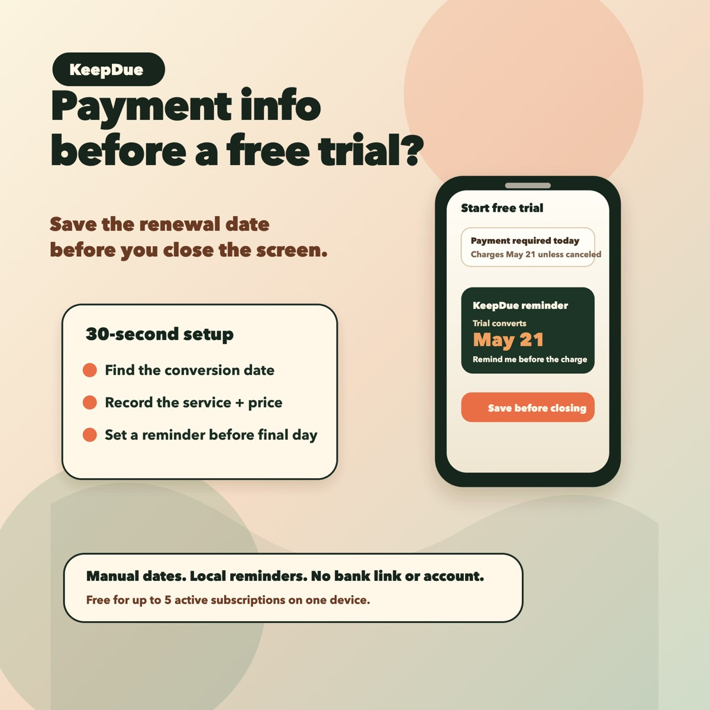

When an app asks for payment information before a free trial starts, the important date is not only the day you sign up. It is the day the trial converts, renews, or needs to be canceled.
The safest habit is to record the deadline while the trial terms are still visible.

The 30-second setup
- Stay on the trial signup or confirmation screen.
- Find the renewal, conversion, or cancellation date.
- Record the service name and date before closing the screen.
- Set the first reminder before the final decision day.
- Add an earlier backup reminder for expensive trials, annual plans, or anything you are unsure about.
Why this matters
Many forgotten trial charges happen because the setup moment and the decision moment are days or weeks apart. A calendar note or mental reminder is easy to miss once the signup screen is gone.
A reminder-first setup makes the date come back while there is still time to decide.
What to record
- Service or app name.
- Trial conversion date.
- Cancellation deadline, if it is different.
- Expected price after the trial.
- Where to cancel, if the signup screen shows it.
Where KeepDue fits
KeepDue is a private iPhone app for this exact habit. Add the trial manually, see what is due next, and get local reminders before the charge.
It does not require bank linking or an account, and it is free for up to 5 active subscriptions on one device.